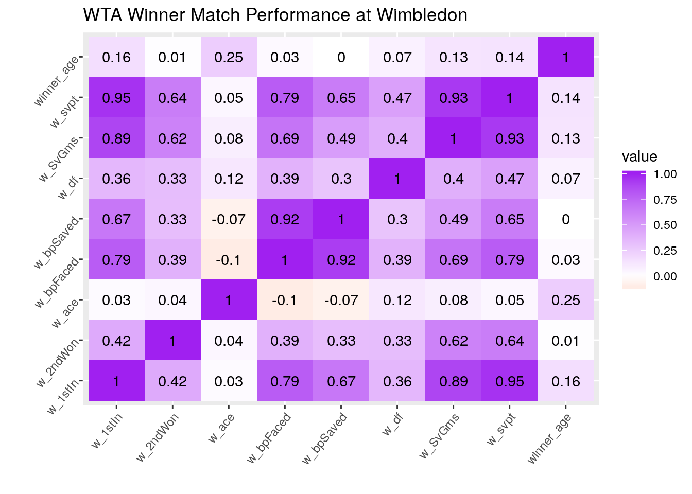
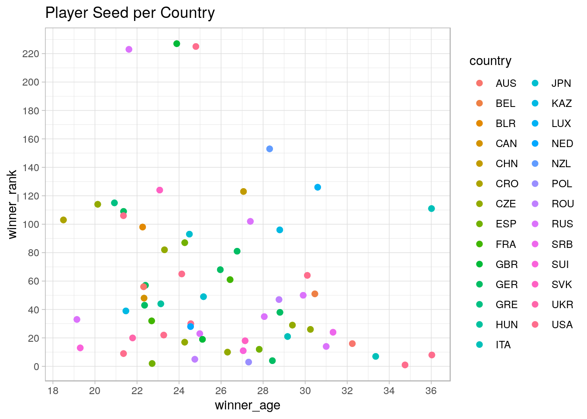
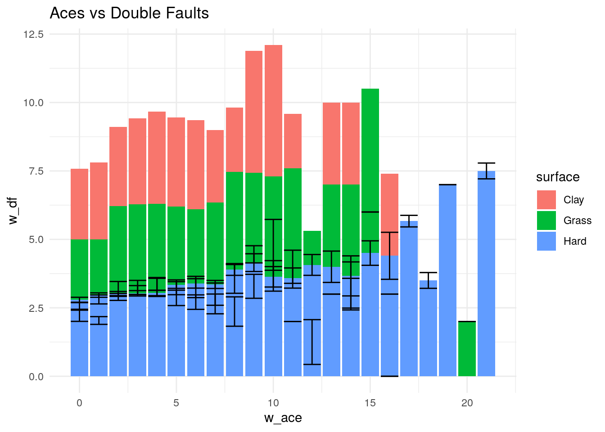
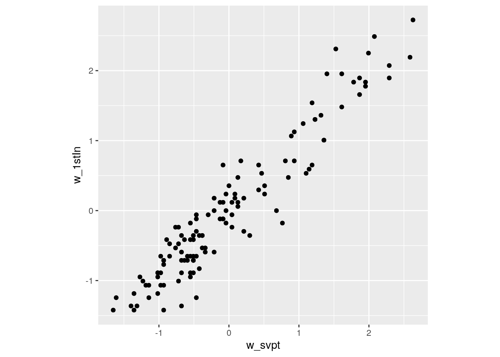

Name: Grecia De La Cerda Date: March 8th, 2020
The two datasets I chose dealt with recorded matches within the Women’s Tennis Association during the years of 2016 and 2020. I wanted to look at popular female players and see their performance difference over four years. While age is known to impact performance, in tennis the longer you play the more experience you have the likely hood you will win more games since you are constantly up against more experienced players. The variables in the data include Player names, tournament, year (2016 vs. 2020), surface, country, and various match play statistics.
# Data sets
library(tidyverse)
library(readr)
library(httr)
wta_matches_2016 <- read.csv("wta_matches_2016.csv")
wta_matches_2020 <- read_csv("wta_matches_2020.csv")# Joining
matches <- wta_matches_2016 %>% full_join(wta_matches_2020)
head(matches)## tourney_id tourney_name surface draw_size tourney_level tourney_date
## 1 2016-1049 Auckland Hard 32 I 20160104
## 2 2016-1049 Auckland Hard 32 I 20160104
## match_num winner_id winner_seed winner_entry winner_name winner_hand
## 1 300 201585 5 Sloane Stephens R
## 2 299 201504 Julia Goerges R
## winner_ht winner_ioc winner_age loser_id loser_seed loser_entry
## 1 170 USA 22.79261 201504
## 2 180 GER 27.17043 201481 Q
## loser_name loser_hand loser_ht loser_ioc loser_age score
## 1 Julia Goerges R 180 GER 27.17043 7-5 6-2
## 2 Tamira Paszek R 165 AUT 25.07871 6-4 6-2
## best_of round minutes w_ace w_df w_svpt w_1stIn w_1stWon w_2ndWon w_SvGms
## 1 3 F 76 1 0 57 36 28 15 10
## 2 3 SF 66 7 1 46 26 22 12 9
## w_bpSaved w_bpFaced l_ace l_df l_svpt l_1stIn l_1stWon l_2ndWon l_SvGms
## 1 2 2 6 2 59 35 26 11 10
## 2 0 1 0 0 44 27 19 5 9
## l_bpSaved l_bpFaced winner_rank winner_rank_points loser_rank
## 1 3 6 30 1715 50
## 2 2 6 50 1040 172
## loser_rank_points
## 1 1040
## 2 312
## [ reached getOption("max.print") -- omitted 4 rows ]No cases were dropped but the problem with this is that it became vary difficult to tidy later on.
# Tidying
messy <- matches %>% separate(tourney_id, into = c("year", "code"),
sep = "-") %>% pivot_wider(names_from = year, values_from = code)
tidy_matches <- messy %>% pivot_longer(c("2016", "2020"), names_to = "year",
values_to = "code")Since the data I merged was already tidy and continued to be tidy after the merge I took this opportunity to “mess up” the data to make it tidy again. So to make the data “messy” I chose a simple variable like tourney_id and used pivot_wider, that way I could track what I messed up so I could double check if I it tidyied back into it’s original format using pivot_longer.
# Wrangling
wtaplayers <- tidy_matches %>% rename(country = winner_ioc) %>%
filter(tourney_name == "Wimbledon") %>% select(10, 1, 49,
50, 2, 7, 11:14, 26, 45, 46) %>% arrange(year) %>% mutate(rank_point_cat = case_when(winner_rank_points >
6700 ~ "high", 3300 <= winner_rank_points & winner_rank_points <=
6700 ~ "med", winner_rank_points < 3300 ~ "low")) %>% group_by(winner_name,
tourney_name, year, surface, country, winner_age, winner_rank,
winner_rank_points, rank_point_cat) %>% summarize(mean_age = mean(winner_age,
na.rm = T), sd_age = sd(winner_age, na.rm = T)) %>% glimpse()## Observations: 128
## Variables: 11
## Groups: winner_name, tourney_name, year, surface, country, winner_age, winner_rank, winner_rank_points [128]
## $ winner_name <chr> "Agnieszka Radwanska", "Agnieszka Radwanska", "Ali…
## $ tourney_name <chr> "Wimbledon", "Wimbledon", "Wimbledon", "Wimbledon"…
## $ year <chr> "2016", "2020", "2016", "2020", "2016", "2020", "2…
## $ surface <chr> "Grass", "Grass", "Grass", "Grass", "Grass", "Gras…
## $ country <chr> "POL", "POL", "BLR", "BLR", "FRA", "FRA", "CRO", "…
## $ winner_age <dbl> 27.31006, 27.31006, 22.26694, 22.26694, 26.42847, …
## $ winner_rank <dbl> 3, 3, 98, 98, 61, 61, 103, 103, 23, 23, 38, 38, 4,…
## $ winner_rank_points <dbl> 5875, 5875, 673, 673, 1035, 1035, 644, 644, 1960, …
## $ rank_point_cat <chr> "med", "med", "low", "low", "low", "low", "low", "…
## $ mean_age <dbl> 27.31006, 27.31006, 22.26694, 22.26694, 26.42847, …
## $ sd_age <dbl> 0, 0, NA, NA, 0, 0, NA, NA, 0, 0, NA, NA, 0, 0, 0,…I seperated the graphs and included code so it would look neater:
# correlation heatmap
library(ggplot2)
alldata <- tidy_matches
wim <- filter(alldata, tourney_name == "Wimbledon") %>% select(14,
29, 33, 28, 34, 35, 27, 32, 30)
wim %>% select_if(is.numeric) %>% cor %>% as.data.frame %>% rownames_to_column %>%
pivot_longer(-1) %>% ggplot(aes(rowname, name, fill = value)) +
geom_tile() + geom_text(aes(label = round(value, 2))) + xlab("") +
ylab("") + scale_fill_gradient2(low = "red", high = "purple") +
theme(axis.text = element_text(angle = 50, hjust = 1)) +
ggtitle("WTA Winner Match Performance at Wimbledon") From the correlation heat map created of the WTA Match Performace statistic during Wimbeldon matches, there’s a correlation with each winner’s initial starting point. Each winner had a strong correlation between their service point being that being thir first ball in. This makes sense because the winner first point, whether that be won through an ace or is just their first serve, correlates negitively with the amount of double faults performed.
# Scatterplot
ggplot(data = wtaplayers, aes(x = winner_age, y = winner_rank)) +
geom_point(size = 2, aes(color = country, size = winner_rank_points)) +
theme_light() + scale_x_continuous(breaks = scales::pretty_breaks(n = 10)) +
scale_y_continuous(breaks = scales::pretty_breaks(n = 10)) +
ggtitle("Player Seed per Country") I just thought it would be interesting to look at player seed, in relation to age by country from the complete data and see if certain countries tend to produce young high ranking players. Player seed and age regardless of the country tends to stay around the median age range. The highest age vs. rank outlier we see is Serena Williams which comes as no surprise as she’s the oldest woman to hold a number one ranking over the course of many years.
# Barplot
ace <- filter(alldata, tourney_name == "Wimbledon") %>% select(10,
8, 14, 29, 33, 28, 34, 35, 27, 32, 30)
ggplot(alldata, aes(x = w_ace, y = w_df, fill = surface)) + geom_bar(stat = "summary",
fun.y = "mean") + geom_errorbar(stat = "summary") + theme_minimal() +
ggtitle("Aces vs Double Faults") It’s a common fact for many tennis spectators and players that the court surface you play on affects the bounce of the ball and ,depending on the strength of your swing, can quicken the life span of the ball making it become “flat”. I thought it would be interesting to analyze if the amount of aces winners made versus the amount of double faults (two unsuccessul serve attempts) were impacted by the court the winners played on. The graph shows you have more aces on hard surface courts versus clay which aligns with the idea that the different courts give the oppenent ample time to return a serve (no longer rendering it an ace).
# Dimensionality Reduction
library(cluster)
library(GGally)
wim %>% select_if(is.numeric) %>% scale %>% cov %>% round(2)## winner_age w_svpt w_SvGms w_df w_bpSaved w_bpFaced w_ace w_2ndWon
## winner_age 1.00 0.14 0.13 0.07 0.00 0.03 0.25 0.01
## w_svpt 0.14 1.00 0.93 0.47 0.65 0.79 0.05 0.64
## w_SvGms 0.13 0.93 1.00 0.40 0.49 0.69 0.08 0.62
## w_df 0.07 0.47 0.40 1.00 0.30 0.39 0.12 0.33
## w_bpSaved 0.00 0.65 0.49 0.30 1.00 0.92 -0.07 0.33
## w_bpFaced 0.03 0.79 0.69 0.39 0.92 1.00 -0.10 0.39
## w_ace 0.25 0.05 0.08 0.12 -0.07 -0.10 1.00 0.04
## w_2ndWon 0.01 0.64 0.62 0.33 0.33 0.39 0.04 1.00
## w_1stIn 0.16 0.95 0.89 0.36 0.67 0.79 0.03 0.42
## w_1stIn
## winner_age 0.16
## w_svpt 0.95
## w_SvGms 0.89
## w_df 0.36
## w_bpSaved 0.67
## w_bpFaced 0.79
## w_ace 0.03
## w_2ndWon 0.42
## w_1stIn 1.00wim = data.frame(scale(wim))
ggplot(wim, aes(x = w_svpt, y = w_1stIn)) + geom_point() + coord_fixed()